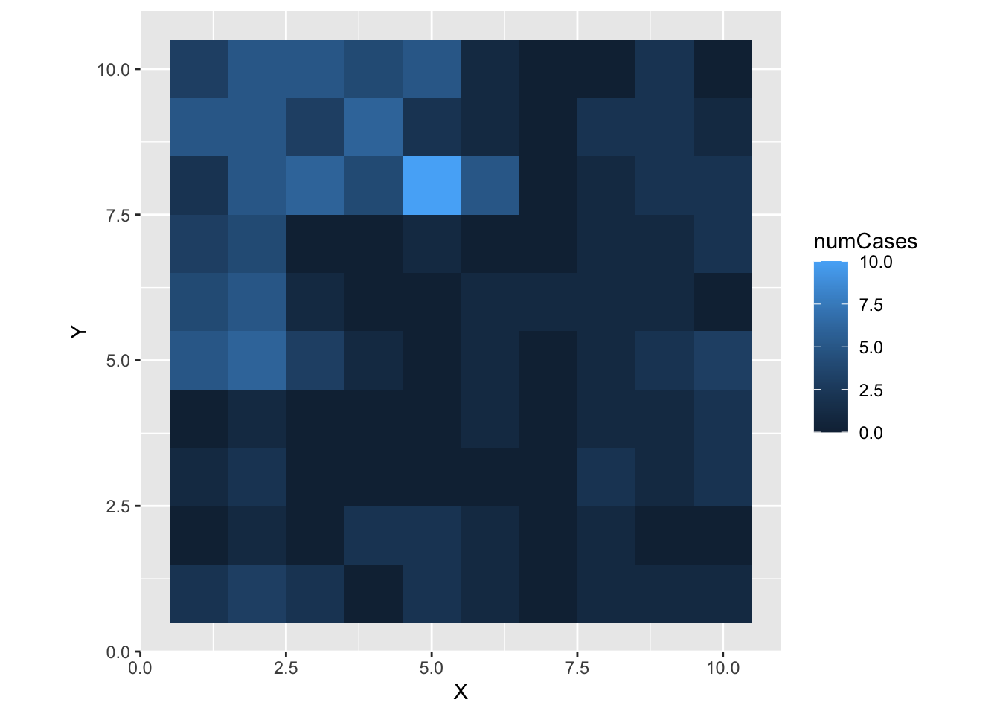
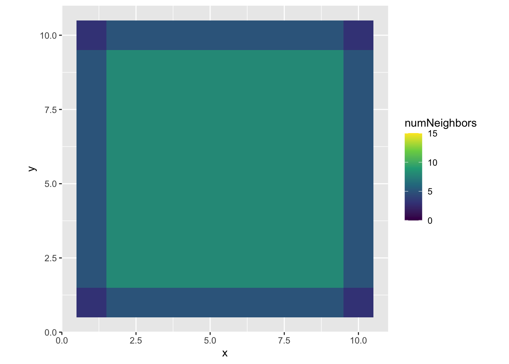
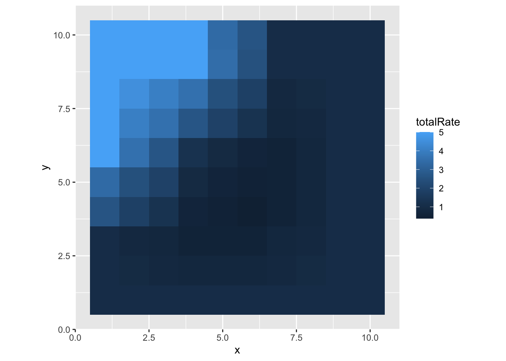
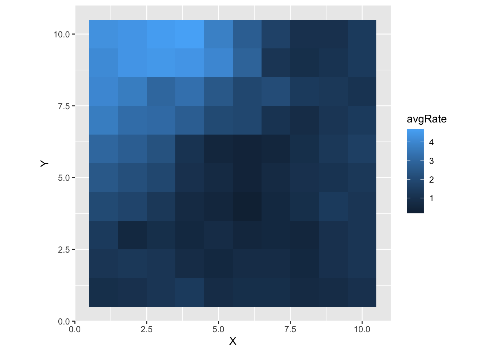

library(tidyverse)
library(spdep)5 Finding Your Neighbors
5.1 Loading Packages
5.2 Setting up a simulated city with spatially varying risk
5.3 Constructing a grid
makeSquareGrid <- function(D) {
x_coords <- 1:D
y_coords <- 1:D
## The expand.grid function creates a data frame
## with all possible combinations of the
## input elements
grid_df <- expand.grid(x_coords, y_coords)
## Set the variable names
colnames(grid_df) <- c("X","Y")
## Each cell also gets a unique ID from 1:D^2
grid_df$cellID <- 1:nrow(grid_df)
## Each cell has the same population
grid_df$N <- 100
return(grid_df)
}
D <- 10
grid_df <- makeSquareGrid(D)5.4 Simulating risks by neighborhood zones
## This is the background, per-capita rate in each
## cell of our city
baseline_per_100 <- 1
## This is the relative risk of the outcome for individuals
## in the top-left qudrant
top_left_rr <- 5
## This is the relative risk of the outcome for
## individuals living towards the center of the
## simulated city
center_rr <- 0.25
## Here, we initialize a variable for the per-capita rate
## within each cell
grid_df$rate <- 0
## This is just filling in the per-capita rates for each cell
## as a function of where they are on the grid (assuming a 10 x 10 grid)
grid_df <- grid_df %>%
mutate(rate = case_when( (X <= 5) & (Y >= 5) ~ baseline_per_100*top_left_rr,
.default = baseline_per_100)) %>%
mutate(rate = case_when(between(X,3,7)&between(Y,3,7) ~ rate*center_rr,
.default = rate))
## Now we can also draw the number of cases observed in
## each grid cell
grid_df <- grid_df %>%
mutate(p_disease = 1-exp(-rate/N))
## Simulate the observed number of cases in each cell
## as a function of the population size (N) and probability of diseaw
grid_df$numCases <- rbinom(nrow(grid_df), grid_df$N, grid_df$p_disease)g <- ggplot(grid_df) +
geom_tile(aes(x = X, y = Y, fill = numCases)) +
coord_equal()
plot(g)
5.5 Exercises
Plot the sampled number of cases in addition to the per-capita rate in each cell.
Change the baseline and spatial relative risks to higher or lower values. What happens to the agreement between the spatial patterning of the cases vs. the rates at very high rates vs. very low ones?
6 Finding Neighbors
gridNeighbors <- cell2nb(D,D, type="queen", torus = FALSE)
xyc <- attr(gridNeighbors, "region.id")
## Extracts the x,y coords of each cell
xy <- matrix(as.integer(unlist(strsplit(xyc, ":"))), ncol=2, byrow=TRUE)
xy <- data.frame(x = xy[,1], y = xy[,2])
gridNeighborMatrix <- nb2mat(gridNeighbors, zero.policy=TRUE, style="B")
gridNeighborCounts <- rowSums(gridNeighborMatrix)
xy$numNeighbors <- gridNeighborCounts
##print(gridNeighborMatrix[1:5, 1:10])g <- ggplot(xy) +
geom_tile(aes(x = x, y = y, fill = numNeighbors)) +
scale_fill_viridis_c(limits = c(0,15)) +
coord_equal()
plot(g)
6.1 Exercises
Try changing the neighbor type to
queenfrom rook. What happens to the number of neighbors for each cell?Look at the help file for the
nb2matfunction. Try one of the adjacency matrix styles other thanB(binary).What happens if you change the option
torus = TRUE? Why?
xy$totalRate <- gridNeighborMatrix %*% grid_df$rate / xy$numNeighborsg <- ggplot(xy) +
geom_tile(aes(x = x, y = y, fill = totalRate)) +
coord_equal()
plot(g)
6.2 K Nearest Neighbors
kNearestNeighborsList <- function(df, k) {
xy <- df %>%
select(X,Y)
kNeighbors <- knearneigh(xy, k = k)$nn %>%
data.frame()
kNeighbors$cellID <- 1:nrow(kNeighbors)
neighborsList <- kNeighbors %>%
pivot_longer(cols = !matches("cellID"), names_to = NULL, values_to = "neighborID") %>%
arrange(cellID, neighborID)
return(neighborsList)
}
k <- 10
neighborsList <- kNearestNeighborsList(grid_df, k)
print(neighborsList)# A tibble: 1,000 × 2
cellID neighborID
<int> <int>
1 1 2
2 1 3
3 1 4
4 1 11
5 1 12
6 1 13
7 1 21
8 1 22
9 1 23
10 1 31
# ℹ 990 more rows## This takes a data frame with pairs of cells and neighbors and brings in
## contextual information (number of cases, the per-capita rate) by cell.
## It then
kNeighborsRates <- inner_join(neighborsList, grid_df,
by = join_by(neighborID == cellID)
) %>%
select(cellID, numCases, rate) %>%
group_by(cellID) %>%
summarize(avgRate = sum(numCases)/k) %>%
inner_join(select(grid_df, cellID, X, Y))
print(kNeighborsRates)# A tibble: 100 × 4
cellID avgRate X Y
<int> <dbl> <int> <int>
1 1 0.9 1 1
2 2 1 2 1
3 3 1.2 3 1
4 4 1.4 4 1
5 5 0.8 5 1
6 6 0.9 6 1
7 7 0.9 7 1
8 8 0.7 8 1
9 9 0.8 9 1
10 10 1 10 1
# ℹ 90 more rowsg <- ggplot(kNeighborsRates) +
geom_tile(aes(x = X, y = Y, fill = avgRate)) +
coord_equal()
plot(g)
Additional Exercises
Try different values of
kand observe the impact that smaller or larger numbers of neighbors involved in the smoothing have on the image.Try this with the number of cases rather than the rates. What changes when the number of cases is relatively low due to sampling error?